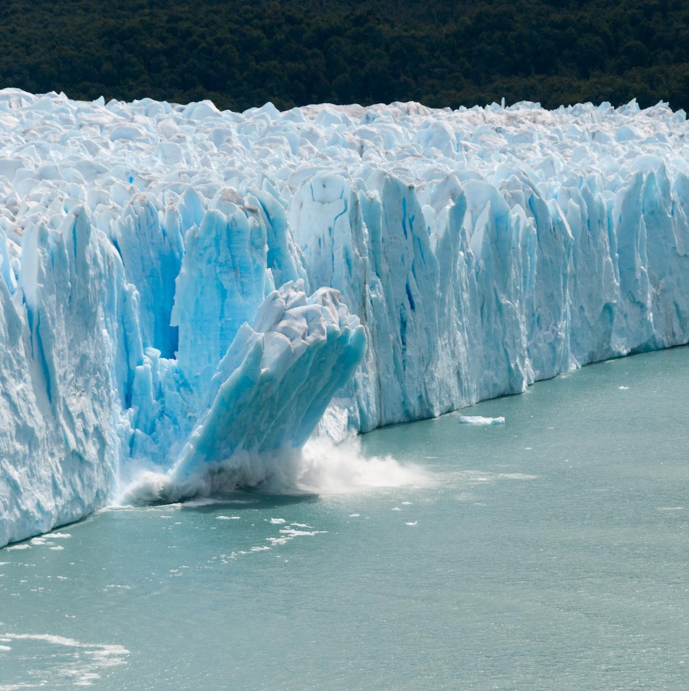

La destruction des habitats des morses menace leur survie en réduisant les zones
de repos et de reproduction essentielles. Cette perte d'habitat compromet leur
capacité à se nourrir et à se reproduire, mettant en péril l'espèce.
La fonte des glaces polaires est principalement causée par le
réchauffement climatique, qui augmente les températures mondiales.
L'élévation des températures entraîne la fonte des glaciers et des
calottes glaciaires, réduisant leur masse. De plus, la perte de la glace
augmente l'absorption de chaleur par l'océan, accélérant encore le processus
de fonte.